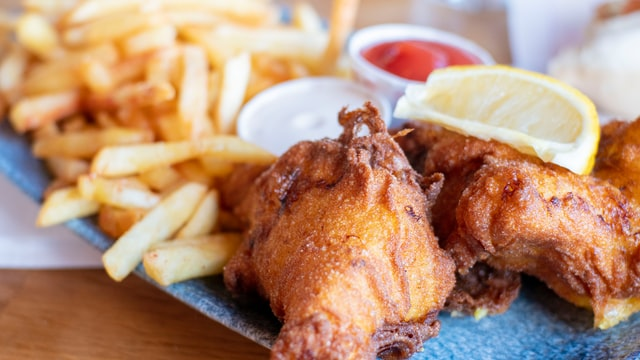

Classic Fish and Chips

Description
Classic fish and chips are a British institution and a national dish that everyone can't help but love. This
comforting dish consists of a freshly fried, hot, white fish fillet and large,sliced and fried potatoes.
Ingredients
For the Fish:
- 7 tablespoons all-purpose flour, divided
- 7 tablespoons cornstarch
- 1 teaspoon baking powder
- sea salt, to taste
- 1 pinch freshly ground black pepper, to taste
- 1/3 cup dark beer, cold
- 1/3 cup sparkling water, cold
- 4 (7-ounce) cod fillets
For the Chips
- 2 pounds potatoes, peeled
- 1 quart vegetable oil, for frying
Steps
- Gather the Ingredients
- Set aside 2 tablespoons of flour. In a large, roomy bowl, mix the remaining flour with the cornstarch and
baking powder. Season lightly with tiny pinch of salt and pepper.
- Using a fork to whisk continuously, add the beer and the sparkling water to the flour mixture and continue
mixing until you have a thick, smooth batter. Place the batter in the fridge to rest for between 30 minutes
and 1 hour.
- Meanwhile, cut the potatoes into a little less than 1/2-inch-thick slices, then slice these into
1/2-inch-wide ships. Place the chips into a colander and rinse under cold running water.
- Place the washed chips into a pan of cold water. Bring to a gentle boil and simmer for 3 to 4 minutes.
- Drain carefully through a colander, then dry with paper towels. Keep in the fridge covered with paper
towels until needed.
- Meanwhile, lay the cod fillets on a paper towel and pat dry. Season lightly with a little sea salt.
- Heat the oil to 350 F in a deep-fat fryer or large, deep saucepan. Cook the chips a few handfuls at a time
in the fat for about 2 minutes. Do not brown them. Once the chips are slightly cooked, remove them from the
fat and drain. Keep to one side.
- Place the 2 tablespoons of flour reserved from the batter mix into a shallow bowl. Toss each cod fillet in
the flour and shake off the excess.
- Dip into the batter, coating the entire fillet.
- Check that the oil temperature is still 350 F. Carefully lower each fillet into the hot oil. Fry for
approximately 8 minutes, or until the batter is crips and golden, turning the fillets from time to time with
a large slotted spoon.
- Once cooked, remove the fillets from the hot oil and drain on paper towels. Sprinkle with salt. Cover with
greaseproof paper (parchment paper) and keep hot.
- Heat the oil to 400 F, then cook the chips until golden and crisp, or about 5 minutes. Remove from the oil
and drain. Season with salt.
- Serve immediately with the hot fish accompanied by your favorite condiment.